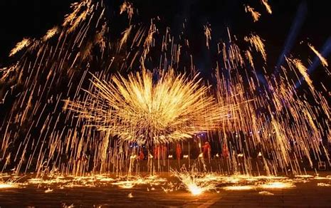

打铁花的起源可以追溯到唐宋时期，最初源于古代铁匠在日常劳作中的偶然发现。当时，铁匠们在锻打铁器时，发现高温铁水飞溅形成的火花十分美丽，逐渐发展成为一种独特的民间艺术形式。
关于打铁花的起源，还流传着许多美丽的传说。其中最为广泛流传的是"铁匠驱魔"的故事：相传在古代某个村庄，每到夜晚就有妖魔出没，村民们不堪其扰。一位聪明的铁匠发现，当他抛洒铁水时，妖魔会被火花吓退。从此，村民们在重要节日和庆典上表演打铁花，以驱邪纳福。
另一个传说则与农业祈福有关：古人认为，打铁花的火光能够模拟太阳的光芒，有助于庄稼生长，因此在春耕时节会举行打铁花仪式，祈求丰收。
"铁花飞舞，如繁星坠落人间，照亮黑夜，驱散邪祟。" ——《民间艺术志》